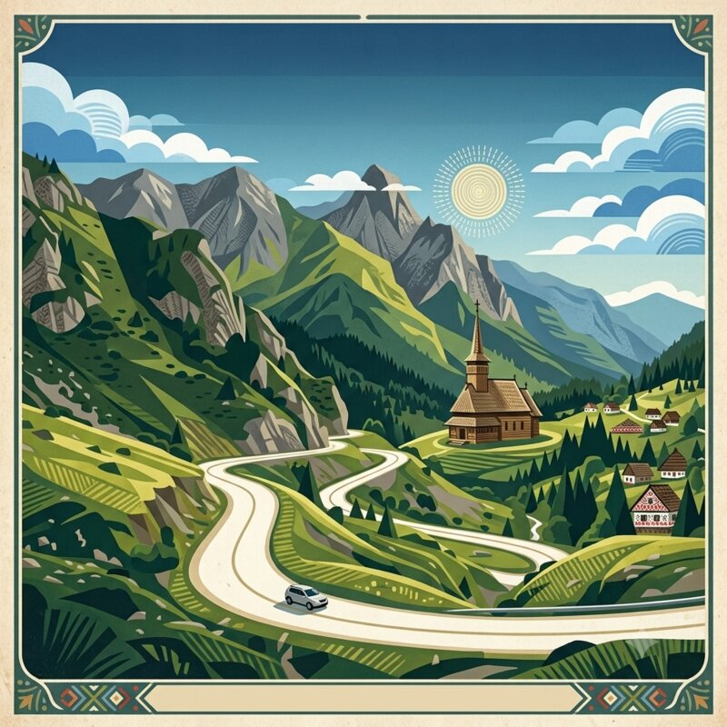

Añade aquí número de vuelo, hora, terminal y enlace a la reserva cuando tengas el billete.
Zona recomendada: Dorobanți o Floreasca — tranquilos, con buena conexión al aeropuerto y aparcamiento para el coche que se recoge mañana. Añade nombre, dirección, código de reserva, check-in/out y teléfono cuando reserves.
Reservar 2 noches aquí para aprovechar mejor los alrededores. Añade nombre, dirección, código de reserva, check-in/out y teléfono cuando reserves.
Misma reserva que el día 2 si son noches seguidas. Confirma que la reserva cubre las dos noches.
Opción destacada: la Cabaña Bâlea Lac, a 2.034 m de altitud, junto al lago glaciar. Alternativas en la vertiente sur (Arefu, Căpățâneni o Cârțișoara). Pocas plazas y cobertura móvil irregular: reserva con antelación y guarda la dirección offline.
Dos noches aquí. Mejor dentro o junto al casco histórico, con aparcamiento perimetral cerca. Añade nombre, dirección, código de reserva y teléfono cuando reserves.
Misma reserva que el día 5 si son noches seguidas. Confirma que la reserva cubre las dos noches.
Reservar con semanas de antelación — la ciudadela tiene pocas plazas. Dormir dentro de las murallas es lo que hace especial esta parada.
Dos noches aquí. Añade nombre, dirección, código de reserva, check-in/out y teléfono cuando reserves.
Busca una pensiune familiar (gazda) en Breb, Șurdești o Budești: la hospitalidad aquí es legendaria y la mayoría incluye cena casera de kilómetro cero. Dos noches en la región. Añade datos cuando reserves.
Misma pensiune que el día 9 si son noches seguidas. Confirma que la reserva cubre las dos noches y si la cena está incluida.
Zona de Gura Humorului o Suceava, para llegar a Voroneț al amanecer del día 12 sin madrugar en exceso. Añade nombre, dirección, código de reserva y teléfono cuando reserves.
Zona Aeropuerto OTP (Otopeni), con opciones económicas a 5-10 minutos del terminal — el vuelo sale a las 06:45. Añade nombre, dirección, código de reserva y teléfono cuando reserves.
La polenta rumana. Base de la cocina tradicional, acompaña casi todo. Con queso y nata agria es un plato completo.
Hojas de col rellenas de carne picada y arroz, cocidas en caldo de tomate. El plato de domingo de Rumanía.
Pequeñas salchichas a la parrilla sin piel, con mezcla de especias y ajo. El fast food rumano que los locales defienden a muerte.
Sopa agria con verduras y carne. Cada región tiene su variante. La de burtă (callos) es la más potente.
Donut de queso frito con nata y mermelada de cereza. El postre por excelencia. Pedir siempre.
Queso de oveja intenso, curado en corteza de abeto. Sabor largo y complejo.
Queso blanco salado similar al feta. Ideal con tomate y cebolleta en los desayunos.
Queso amarillo semi-curado, normal o ahumado. Base de muchos platos gratinados.
Textura suave como ricotta, ligeramente dulce. Ideal en los papanași y pastas rellenas.
El tinto rumano por excelencia. Uva autóctona, fruta oscura y taninos suaves. Pedir siempre sobre el vino importado.
Blanco dulce del noreste, con notas de miel y membrillo. Vino de postre histórico, siglos XV.
Blanco aromático con notas de moscatel. Producido en Dealu Mare y Valle del Danubio.
Aguardiente de frutas (ciruelas, peras, albaricoques) del norte de Rumanía. Los artesanales caseros superan el 60% de alcohol y tienen una complejidad que la versión comercial no alcanza. En Maramureș y Bucovina, ofrecerla al llegar es el primer gesto de hospitalidad.
El aguardiente de ciruelas más común en el resto del país. Más joven y suave que la pálinca. Se sirve antes de las comidas, solo, a temperatura ambiente.
Rumanía tiene aguas minerales excelentes y muy baratas. Borsec y Harghita son las más conocidas.
Limonada artesanal, en bares y terrazas. Muy refrescante en verano, con hierbas frescas.
Refresco artesanal de flor de saúco. Típico de julio. Ligeramente fermentado, muy aromático.
Brioche dulce relleno de nueces, cacao o amapola. Omnipresente en panaderías.
Bizcocho empapado en almíbar de ron con nata. El pastel de las pastelerías de ciudad.
Masa fina rellena dulce o salada. Cada región tiene su variante. La de queso fresco y eneldo es la más típica.
Rumanía tiene la mayor población de osos pardos de Europa. La presencia en rutas de montaña es real, no anecdótica.